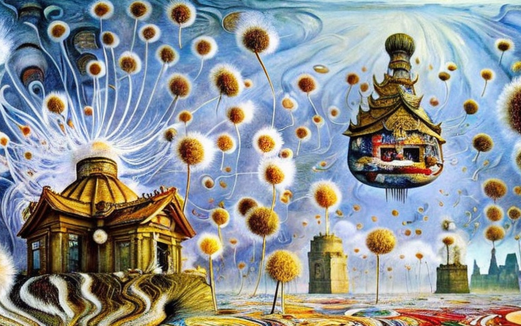
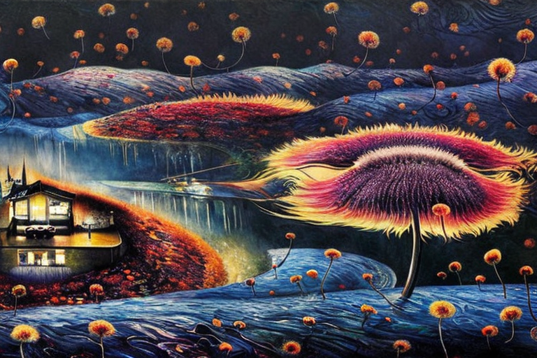

The dandelion temple and it’s secrets
HOME
Table of Contents
The dandelion temple

In the heart of the jungle, there stood a temple unlike any other. It was built of dandelions, their white fluff glowing in the moonlight. The temple was spherical in shape and could fly through the air, disappearing into the clouds every other moon cycle.
The temple was said to hold great power and wisdom, but only the bravest and most worthy were allowed to enter. Many had attempted to find the temple, but it was hidden deep in the jungle and protected by mysterious forces.
One day, a young adventurer named Odis set out on a journey to find the temple. He had heard stories of its power and wanted to uncover its secrets. He traveled through treacherous swamps and climbed steep mountains, facing countless challenges along the way.
But Odis was determined and would not be deterred. He pushed on, and after many long months, he finally reached the heart of the jungle. There, in the distance, he saw the temple, its white fluff shining in the moonlight.
Odis approached the temple with caution, but as he drew near, the temple began to fly away. Odis was determined not to let this chance slip away, and he chased after the temple, running through the jungle as fast as he could.
Finally, Odis caught up to the temple and climbed aboard. Inside, he found a room filled with ancient texts and artifacts. He spent many days studying and learning the wisdom of the temple, and when he emerged, he was a changed man.
He returned to his village and shared the wisdom he had learned, teaching the people how to live in harmony with nature. And the temple, still hidden deep in the jungle, continued to fly away every other moon cycle, its secrets known only to a select few.
The temple’s trap

As Odis’s story spread, many others were inspired to seek out the dandelion temple, eager to unlock its secrets for themselves. But they soon learned that the temple was not to be taken lightly.
For the temple was not just a place of wisdom, but also a trap for the unwary. Its white fluff, which had looked so inviting from afar, was actually a network of delicate fibers that ensnared visitors and held them fast.
The temple’s many seeds, small and seemingly harmless, were actually sharp and barbed, designed to catch and hold the unsuspecting. And the peristemion, the temple’s innermost layer, was a labyrinth of thorns and briars that ensnared those who ventured too deep.
But the temple’s traps were not meant to harm, only to test. Those who could navigate the minutiae of the temple’s defenses and reach its inner sanctum would be deemed worthy and granted access to the temple’s wisdom.
And so, many brave souls set out to find the temple, each one determined to outsmart its traps and reach the inner sanctum. But the journey was not easy, and many were caught and held fast by the temple’s fibers, seeds, and peristemion.
But those who persevered, who were able to see through the illusions of the temple and navigate its traps, were granted access to its secrets. They emerged from the temple changed, with a deeper understanding of the world and their place in it.
The temple, still hidden deep in the jungle, continued to fly away every other moon cycle, its secrets known only to a select few. But for those who were able to unlock its wisdom, they had discovered the truth of the temple’s enigmatic nature, and in doing so, had discovered the truth of themselves.
The mysterious nature

As the temple continued to fly away every other moon cycle, many began to wonder how it was able to levitate and travel through the air. Some said it was magic, others said it was the work of the gods. But the truth was more complex and mysterious.
For the temple was not just a structure, but a living organism, with a life force of its own. Its peristemion, the innermost layer, was not just a labyrinth of thorns and briars, but also a network of nerves and energy channels that allowed the temple to respond to the world around it.
When the winds began to blow, the temple would use its peristemion to sense the direction and strength of the wind. It would then adjust its shape and position to harness the wind’s energy, lifting itself into the air and riding the currents like a bird.
As the temple flew, it would navigate through the clouds, avoiding obstacles and seeking out the strongest winds. And as it flew, its peristemion would hold the balance of the structure, keeping it steady and stable as it traveled through the air.
Many watched in awe as the temple flew overhead, its white fluff glowing in the moonlight. They marveled at its beauty and grace, and wondered at the secrets it held.
But for those who had ventured inside the temple, the sight held a deeper meaning. They knew the temple was not just a structure, but a living being, with a consciousness of its own. And they knew that as the temple flew through the air, it was not just traveling, but also seeking, searching for something that only it knew.
And so, the temple continued to fly away every other moon cycle, it disappeared into the clouds, many wondered where it was headed, and what it was searching for. But only the temple knew the answer, and it kept its secrets well, flying through the air in a graceful, enigmatic dance of levitation.
The sowing of knowledge

As the temple continued to fly through the air, many began to wonder about the purpose of its journey. Some believed it was searching for something, others thought it was simply exploring the world. But the truth was far more profound.
For the temple was not just a structure, but a seed, a living being designed to spread its wisdom to other worlds. Its white fluff was not just a decorative feature, but a mechanism for dispersing its seeds.
As the temple flew, it would release its seeds, tiny and seemingly insignificant, into the wind. The seeds would then ride the currents, carried far and wide across the world.
And as they traveled, they would come to rest on other planets and flying astral objects, taking root and growing into new temples, each one a reflection of the original.
The new temples would then continue the journey, spreading their wisdom and knowledge to even more worlds. And in this way, the temple’s wisdom would be shared across the universe, reaching every corner of the cosmos.
As the temple flew, it was not just searching for something, but also sharing its knowledge, spreading its wisdom to all who were willing to receive it. And in this way, the temple fulfilled its purpose, spreading its knowledge to the far reaches of the universe.
The population bloom

As the temple continued to fly through the air, its wisdom and knowledge spreading to the far reaches of the universe, the proliferation of the dandelion temple became more and more apparent. Every planet, it seemed, was a fertile ground for the fluffy structure, and it was not long before the temple could be found on countless worlds.
The temples that sprouted from the seeds released by the original temple were not exact copies, but rather, they were unique structures that reflected the environment they were in. Some were large and grand, while others were small and intimate. Some had intricate peristemion, while others had simple ones.
Some planets, with their harsh and unforgiving environments, were a challenge for the temple to survive. But the temple was not deterred. Its peristemion, the innermost layer, was designed to adapt to any condition, finding a way to survive and thrive in even the most hostile of environments.
Other planets, with their rich and fertile soils, were the perfect ground for the temple to flourish. And as it grew, it would release more seeds, spreading its wisdom and knowledge to even more worlds.
But despite their differences, all of the temples shared one thing in common: they were all expressions of the original temple’s wisdom.
As the temples proliferated throughout the universe, they became a source of wonder and inspiration for all who encountered them. People would travel from far and wide to visit the temples, to marvel at their beauty and to unlock their secrets.
Many of those who ventured inside the temples would come away changed, having unlocked some small piece of the temple’s wisdom. They would then return to their own worlds and share their newfound knowledge with others.
And in this way, the wisdom of the temple became ingrained in the very fabric of the universe, shaping the thoughts and actions of generations to come.
The proliferation of the dandelion temple was not just a physical phenomenon, it was also a spiritual one. The temples served as a reminder of the interconnectedness of all things, and of the importance of sharing knowledge and wisdom.